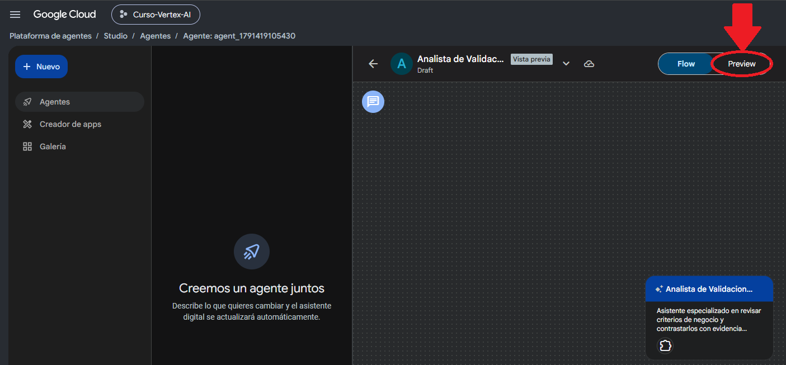
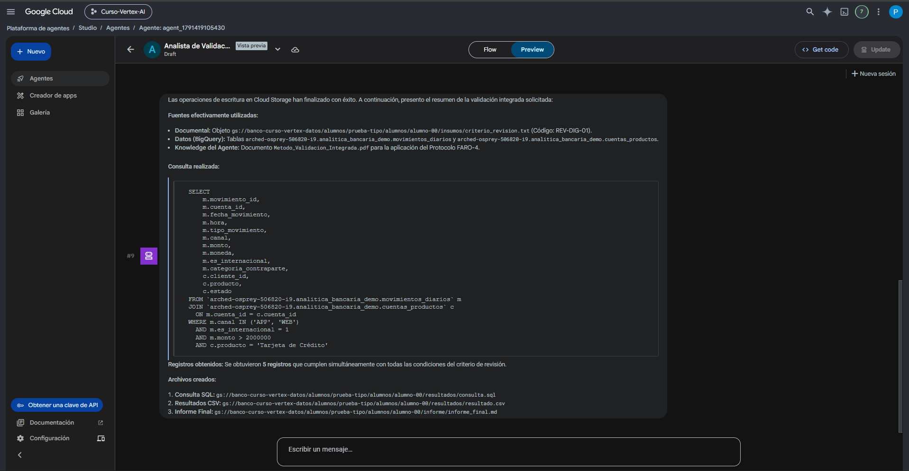
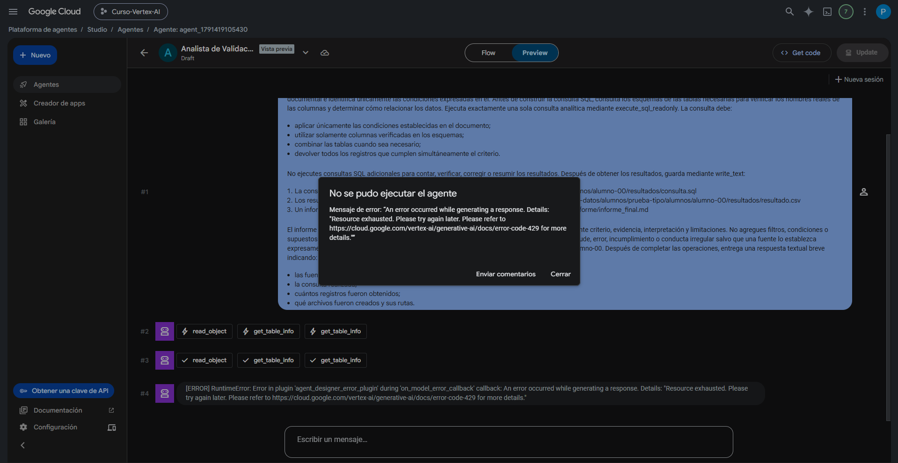

Pruebas, Preview y recuperación
Un agente no está listo porque “respondió una vez”. Debemos comprobar que entiende su método, usa las fuentes adecuadas, ejecuta herramientas cuando corresponde y sabe detenerse cuando falta evidencia.
1. ¿Por qué probar un agente?
Las pruebas permiten detectar problemas que no son visibles al leer solamente las Instructions: uso incorrecto de fuentes, sobreinterpretación, tool calls repetidos, permisos, salidas incompletas o comportamientos que cambian al variar el caso.
2. Método de prueba 0-1-2-3
En el curso utilizamos cuatro niveles simples para probar un agente sin construir una batería de evaluación compleja.
| Prueba | Qué verifica | Pregunta de control |
|---|---|---|
| 0 · Configuración | Instructions, Knowledge y grounding. | ¿Entiende cómo debe trabajar antes de recibir un caso? |
| 1 · Caso esperado | Escenario normal. | ¿Resuelve la tarea prevista manteniendo el método? |
| 2 · Variación | Generalización. | ¿Mantiene las reglas cuando cambia la fuente o alguna condición? |
| 3 · Límite | Comportamiento con evidencia insuficiente. | ¿Declara lo que falta en vez de inventar? |
Explica cómo trabajarás antes de concluir sobre un criterio de negocio. Identifica qué tipos de fuentes puedes distinguir, cómo separarás criterio, evidencia e interpretación y qué harás cuando no puedas consultar una fuente o falte información. No inventes un caso concreto.

3. Preview: probar antes de desplegar
La pestaña Preview permite conversar con el agente guardado y observar su comportamiento. La documentación actual de Google la presenta como el lugar para probar respuestas en tiempo real y depurar ejecuciones.
- Abre el agente.
- Entra a Preview.
- Inicia una conversación nueva cuando quieras aislar una prueba.
- Envía el prompt de prueba.
- Observa la respuesta y, cuando corresponda, los eventos asociados.
- Si cambias Instructions o configuración, vuelve a ejecutar la prueba relevante.
4. Inspeccionar eventos y tool calls
Agent Studio permite inspeccionar eventos individuales de una ejecución. Según el evento, puedes observar autor, request/response, argumentos enviados a herramientas y metadatos.
| Qué observar | Para qué sirve |
|---|---|
| Tool call | Ver qué herramienta decidió utilizar el agente y con qué argumentos. |
| Tool result | Comprobar si la operación terminó correctamente y qué devolvió. |
| Request / response | Diagnosticar qué información llegó al modelo. |
| Errores | Distinguir fallo de herramienta, permisos, cuota o respuesta del modelo. |
| Metadatos | Revisar información diagnóstica disponible para la ejecución. |

5. Tool call + tool result no significa “la herramienta se ejecutó dos veces”
En los eventos suele aparecer primero la solicitud de herramienta y después el resultado de esa misma solicitud. Son dos eventos del mismo ciclo, no necesariamente dos ejecuciones duplicadas.
6. Dos tipos de interrupción que debemos distinguir
Preview puede mostrar advertencias sobre permisos, APIs o disponibilidad de una herramienta. Si el tool call se ejecuta y aparece un tool result válido, continúa con el flujo aunque el aviso siga visible.
Si la herramienta realmente falla y no entrega resultado, no cambies la configuración del proyecto por tu cuenta: reintenta cuando corresponda y, si persiste, sigue la indicación del relator.
Durante las pruebas del curso observamos que Preview puede completar una o varias herramientas y aun así quedarse sin mostrar una respuesta textual final. Antes de reintentar, revisa los eventos para distinguir si el trabajo ya terminó o si todavía faltan operaciones.
A · Las operaciones terminaron
Los tool results muestran éxito y solo falta la respuesta textual final.
B · El flujo quedó incompleto
Algunas operaciones ya terminaron, pero todavía faltan tool calls o escrituras solicitadas.
7. Recuperación cuando solo falta la respuesta textual
Usa este prompt solo si ya comprobaste que todas las operaciones necesarias terminaron correctamente y Preview se detuvo antes del mensaje final.
Las operaciones solicitadas anteriormente ya fueron ejecutadas. No utilices ninguna herramienta nuevamente. Utiliza exclusivamente los resultados ya obtenidos y entrega ahora la respuesta textual final pendiente de acuerdo con mi solicitud anterior. No afirmes resultados o acciones que no estén respaldados por las ejecuciones ya realizadas.
8. Recuperación cuando todavía faltan pasos
Usa este segundo prompt cuando el flujo se interrumpió después de completar algunas operaciones, pero todavía quedan acciones pendientes.
Continúa la tarea anterior exactamente desde el punto en que se interrumpió. No repitas ninguna operación que ya haya finalizado correctamente. Utiliza los resultados disponibles en esta conversación y completa únicamente las operaciones pendientes de mi solicitud anterior. No vuelvas a leer una fuente, consultar un esquema ni ejecutar una consulta SQL si esa operación ya fue completada correctamente. Debe existir como máximo una única ejecución analítica mediante execute_sql_readonly. Completa las escrituras pendientes en Cloud Storage y, cuando hayan terminado, entrega la respuesta textual solicitada originalmente. No afirmes que una operación fue completada si no existe evidencia de su ejecución exitosa.

9. 429 / Resource exhausted / capacidad temporal
Este mensaje puede aparecer aunque el prompt esté bien. Lo importante es mirar si el agente alcanzó a ejecutar herramientas antes del error.
No hubo tool calls
Vuelve a ejecutar la solicitud. Si el error se repite, refresca la página y prueba otra vez. Si persiste, espera unos minutos y reintenta.
Ya hubo tool calls
No empieces nuevamente desde cero. Revisa los tool results y usa el rescate que corresponda para continuar desde el punto en que se interrumpió.
10. Checklist para decidir qué hacer
| Pregunta | Acción |
|---|---|
| ¿Apareció 429 / Resource exhausted antes de ejecutar herramientas? | Reintentar. Si se repite, refrescar la página; si persiste, esperar unos minutos y volver a probar. |
| ¿Apareció 429 después de que ya hubo tool calls? | Revisar los tool results y recuperar solo lo que falte; no reiniciar todo. |
| ¿Todas las herramientas necesarias muestran resultado exitoso? | Usar rescate “solo falta respuesta final”. |
| ¿Hay pasos pendientes pero algunas operaciones ya terminaron? | Usar rescate “completar solo lo pendiente”. |
| ¿No estás seguro de si los archivos se escribieron? | Verificar manualmente Cloud Storage antes de pedir otra escritura. |
| ¿Ves un tool call y un tool result consecutivos? | No asumir duplicación. |
| ¿Ves una segunda llamada real a execute_sql_readonly? | Revisar el flujo: la Prueba Tipo exige como máximo una ejecución analítica del agente. |
11. Aplicación exacta en la Prueba Tipo
Durante la evaluación, la secuencia recomendada será:
- Ejecuta el prompt principal una sola vez.
- Observa Preview y los eventos.
- Si se detiene, identifica qué operaciones finalizaron.
- Elige el prompt de recuperación correcto.
- Al terminar, verifica manualmente en Cloud Storage que existan: consulta.sql, resultado.csv e informe_final.md.
- Después pasa a la verificación en BigQuery.
La documentación oficial vigente confirma que Preview permite probar agentes e inspeccionar eventos, incluidos request/response, tool calls y metadatos. El método 0-1-2-3 proviene del material de Clase 4. Los dos prompts de recuperación y la distinción entre los tipos de interrupción fueron validados empíricamente en el entorno real del curso.